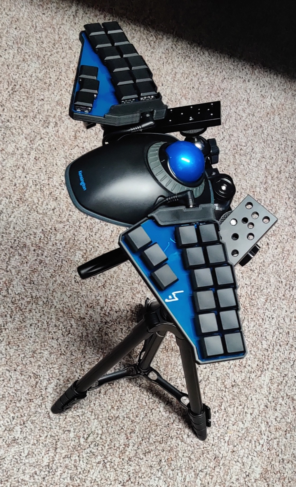

—「0X://Explanation」
Deskless setup - keyboard - trackball - tripod
(p.s. not my legs)
reddit, where all good inspiration starts (besides p*nterest but we don't talk about that.) i saw a post by u/HardAsMagnets, and immediately i knew i needed one. i will not be documenting my personal process, instead check out Martin Körner's guide, which i followed to a T:

┈ ren ♡